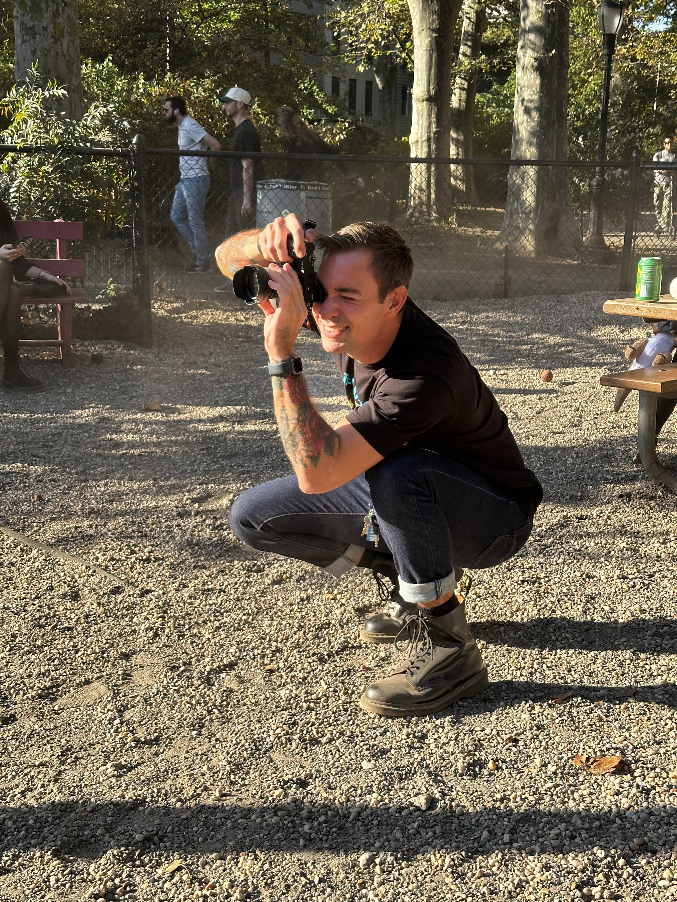
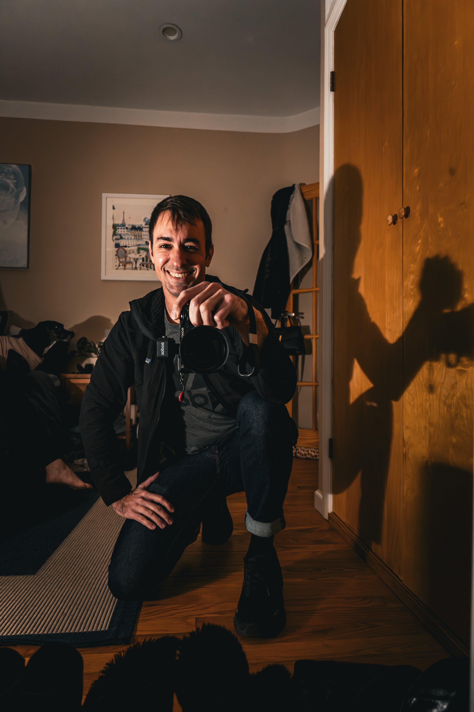

Taylor Nathe saves lives by day and captures them by night. He worked as a standout personal trainer to put himself through nursing school, and today he works as an emergency room nurse in New York City.
He brought that same drive to photography. Entirely self-taught, Taylor has taken a raw, prodigious talent to a world-class level in one of the most demanding visual cities on earth. Clients seek him out and leave surprised twice: once by the work, and again by how much fun it was to make.
Years at the bedside gave him a rare instinct for people: how to put them at ease, how to listen, and how to recognize the moment that matters. Whether it's the quiet geometry of a skyline, the roar of a parade, or a genuine smile, Taylor turns the everyday into something extraordinary.
Commission a project